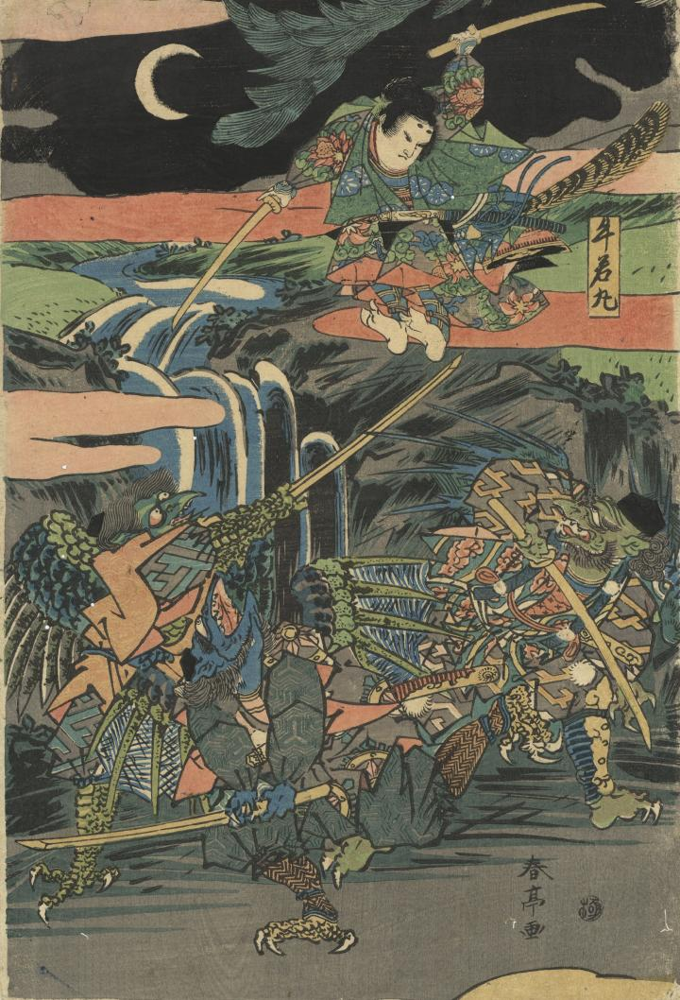

← 图鉴索引

牛若丸が３体の天狗と戦い、武芸修行をしている。
著作者：春亭／出典：親書誌：U426_nichibunken_0403：牛若丸と僧正坊；ウシワカマル ト ソウジョウボウ／日付：2015／資源識別子：U426_nichibunken_0403_0002_0000
Copyright (c)2010- International Research Center for Japanese Studies, Kyoto, Japan. All rights reserved.